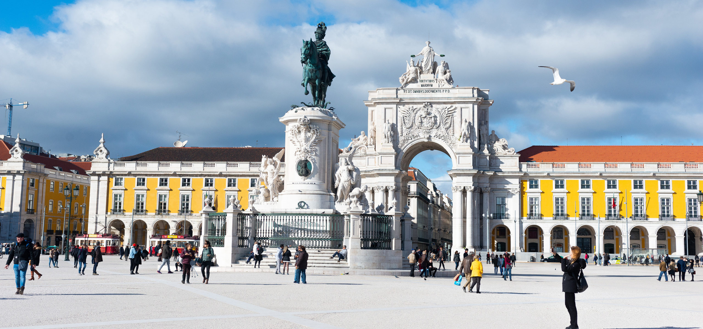

Lisboa é a capital de Portugal, situada na costa.
Do imponente Castelo de São Jorge, a vista abrange as construções em tons pastel da cidade antiga, o estuário do Tejo e a Ponte 25 de Abril.
Perto dali, o Museu Nacional do Azulejo exibe 5 séculos de azulejos decorativos.
Nas proximidades de Lisboa, há uma sequência de praias do Atlântico, entre elas Cascais e Estoril.

Apresento uma lista dos principais pontos turísticos de Lisboa para aproveitar da melhor forma sua viagem e não deixar de conhecer nenhuma atração.
Existem também alguns outros locais interessantes que mencionarei abaixo:
Onde dormir em Lisboa? Com ofertas tão variadas, é normal que se questione. Com todo o tipo de preços, consegue encontrar ofertas únicas e imperdíveis. Os hostels e os B&B vieram para ficar; o alojamento particular é sempre uma opção; mas são os hotéis que oferecem maior variedade e possibilidades de alojamento.
Dos espaços em edifícios históricos, aos mais recentes projetos de renovação ou inovação na cidade, encontra hotéis par todos os gostos e orçamentos. Passe a noite num palácio real, descanse num monumento histórico e aproveite algumas das melhores vistas de Lisboa.
Afinal, na cidade das sete colinas, o que não falta são sítios capazes de encantar até o mais empedernido viajante. Torne a sua estadia em Lisboa verdadeiramente memorável, com a melhor seleção de alojamento.
Abaixo podem assistir a um vídeo sobre a cidade feito pela Câmara municipal de Lisboa.